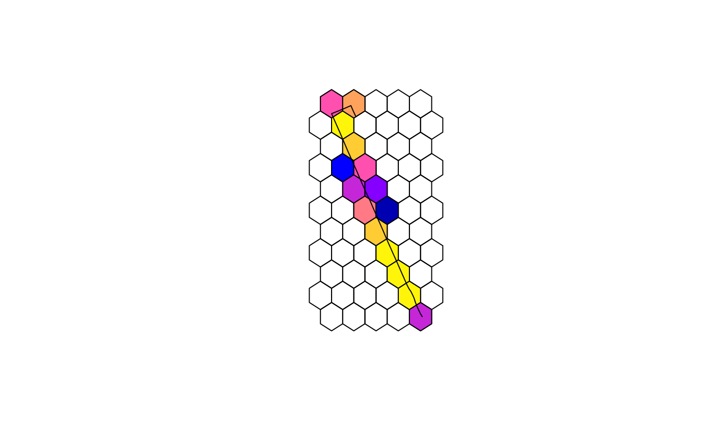

Aggregate emissions proportionally in an sf polygon grid, by performing an
intersection operation between emissions data in sf linestring format and
the input grid cells. User can also aggregate the emissions in the grid
by time of the day.
Arguments
- emi_list
list. A list containing the data of emissions 'emi' ("data.frame" class) and the transport model 'tp_model' ("sf" "data.frame" classes).
- grid
Sf polygon. Grid cell data to allocate emissions.
- time_resolution
character. Time resolution in which the emissions is aggregated. Options are 'hour', 'minute', or 'day (Default).
- quiet
logical. User can print the total emissions before and after the intersection operation in order to check if the gridded emissions were estimated correctly. Default is 'TRUE'.
- aggregate
logical. Aggregate emissions by pollutant. Default is
FALSE.
See also
Other emission analysis:
emis_summary(),
emis_to_dt()
Examples
# \donttest{
if (requireNamespace("gtfstools", quietly=TRUE)) {
library(sf)
# read GTFS
gtfs_file <- system.file("extdata/bra_cur_gtfs.zip", package = "gtfs2emis")
gtfs <- gtfstools::read_gtfs(gtfs_file)
# keep a single trip_id to speed up this example
gtfs_small <- gtfstools::filter_by_trip_id(gtfs, trip_id ="4451136")
# run transport model
tp_model <- transport_model(gtfs_data = gtfs_small,
spatial_resolution = 100,
parallel = FALSE)
# Fleet data, using Brazilian emission model and fleet
fleet_data_ef_cetesb <- data.frame(veh_type = "BUS_URBAN_D",
model_year = 2010:2019,
fuel = "D",
fleet_composition = rep(0.1,10)
)
# Emission model
emi_list <- emission_model(
tp_model = tp_model,
ef_model = "ef_brazil_cetesb",
fleet_data = fleet_data_ef_cetesb,
pollutant = c("CO","PM10","CO2","CH4","NOx")
)
# create spatial grid
grid <- sf::st_make_grid(
x = sf::st_make_valid(emi_list$tp_model)
, cellsize = 0.25 / 200
, crs= 4326
, what = "polygons"
, square = FALSE
)
emi_grid <- emis_grid( emi_list,grid,'day')
plot(grid)
plot(emi_grid["PM10_2010"],add = TRUE)
plot(st_geometry(emi_list$tp_model), add = TRUE,col = "black")
}
#> Linking to GEOS 3.10.2, GDAL 3.4.1, PROJ 8.2.1; sf_use_s2() is TRUE
#> Converting shapes to sf objects
#> Processing the data
#>
#> Attaching package: ‘data.table’
#> The following object is masked from ‘package:purrr’:
#>
#> transpose
#> udunits database from /usr/share/xml/udunits/udunits2.xml
#> Constant emission factor along the route

# }